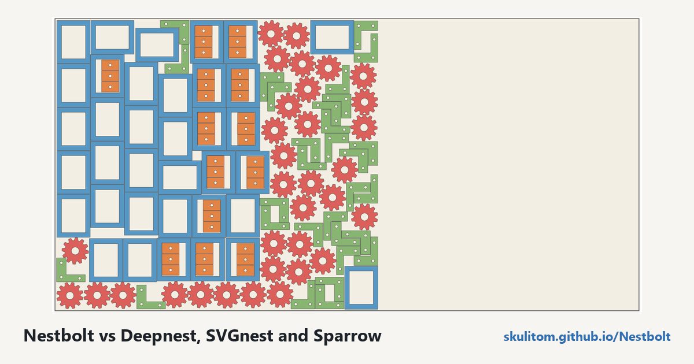

A Deepnest alternative, with the benchmark to inspect
Looking for an alternative to Deepnest or SVGnest starts with a practical question: how much material does the layout use? In Nestbolt's frozen v1 benchmark, it used 8.5% less material at the median than the best of Deepnest, SVGnest and Sparrow at equal 60-second budgets, and 9.6% at 300 seconds on the long subset. Sparrow still wins 8 of the 56 jobs at 60 seconds.
Free, MIT-licensed, no account; your files never leave your computer.
Those figures belong to the frozen 75cbb32 build in the final acceptance run of 2026-10-13. The hosted app runs the current preview build from main, newer than v0.2.0-alpha.1. The preview makes no new comparison against competing tools; stable v0.1.0 remains a download.
Nestbolt vs Deepnest, SVGnest and Sparrow
| Budget | Valid Nestbolt layouts | Less material than the best competitor (median) | Wins or ties |
|---|---|---|---|
| 60 s | 375/375 | 8.5% | 48 of 56 |
| 300 s (long subset) | 60/60 | 9.6% | 11 of 11 |
At 60 seconds, Nestbolt uses less material than Deepnest on all 55 jobs where Deepnest produced a layout, with a median reduction of 9.9%. It uses less than SVGnest on all 36 jobs where SVGnest produced a layout, with a median reduction of 14.4%. The comparison above uses the best of the three competitors on each job.
The results page provides every per-job number, tool revision, seed and the hardware. BENCHMARKS.md records every run, including failures. Read those alongside the headline: the different job counts are part of the result.
How the benchmark was run
The final acceptance run used 75 frozen sheet jobs: 35 academic and 40 maker jobs. Ten were held out from all tuning. Each tool had equal time budgets and one CPU core, with five fresh seeds each. Each competitor used the better of its two settings, and every layout was checked by an independent validator.
The first final run, build 484ce8b, stopped with an error on one job. The fix is in 75cbb32, and both runs are published. You can inspect the earlier run as well as the final results; the benchmark log preserves the failures.
Where Sparrow still wins
Sparrow, which Nestbolt builds on, wins eight jobs at 60 seconds. Seven are one-sheet jobs that Nestbolt hands to Sparrow itself after its own first layout. Sparrow therefore runs with slightly less time inside Nestbolt on those jobs; running it separately is 0.03–2.4% better. The eighth job uses two sheets and is 0.34% better.
That misses Nestbolt's own 60-second bar: wins or ties on 90% of jobs and never more than 1% worse. The 300-second, strip-parity and speed bars are met. The results and status evidence show the boundaries of those conclusions. A median saving does not promise a saving on every drawing.

m-mechanical-frame-inserts, seed 0, sheet turned to landscape. 138 parts, all 39 inserts inside frame windows, occupy 56% of a 2440 × 1220 mm sheet, leaving one offcut. The best competitor used 62% on this job. This illustration is a development run, separate from the final acceptance table.Should you switch?
Nestbolt is free and MIT licensed. If you want to try it with your own drawing, these are the parts of its workflow to evaluate:
- An independent validator checks overlap, spacing, containment, rotations and quantities; invalid layouts are never returned.
- Per-sheet SVG and DXF exports use transformed original curves rather than re-polygonised outlines.
- The browser app runs locally on your computer with nothing uploaded, and shows the best layout while the search runs.
- Native CLI tools and an MCP server support other workflows. Repeatable budgets reproduce a layout with the same build, inputs, work budget and seed unless the real-time limit is reached, which is reported explicitly.
The benchmark compares material use at equal time budgets, nothing else. It does not establish that one tool is better for every workflow. Try a representative file, review the import and exported curves, and choose spacing and rotation permissions for your job. Nestbolt gives no machine-safety or fit certification.
For a practical starting point, follow the SVG/DXF browser guide or inspect the five examples and their settings. The compared projects are Deepnest, SVGnest and Sparrow; their GitHub repositories are linked here so you can inspect each directly.